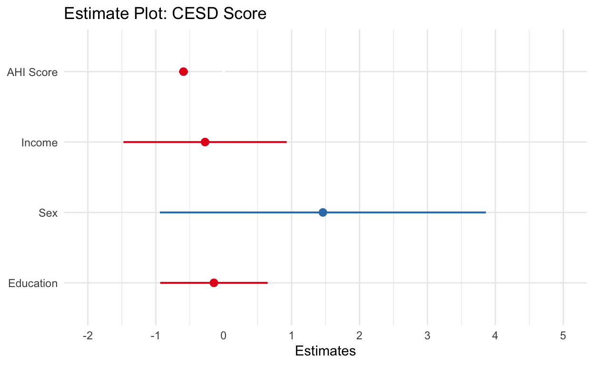
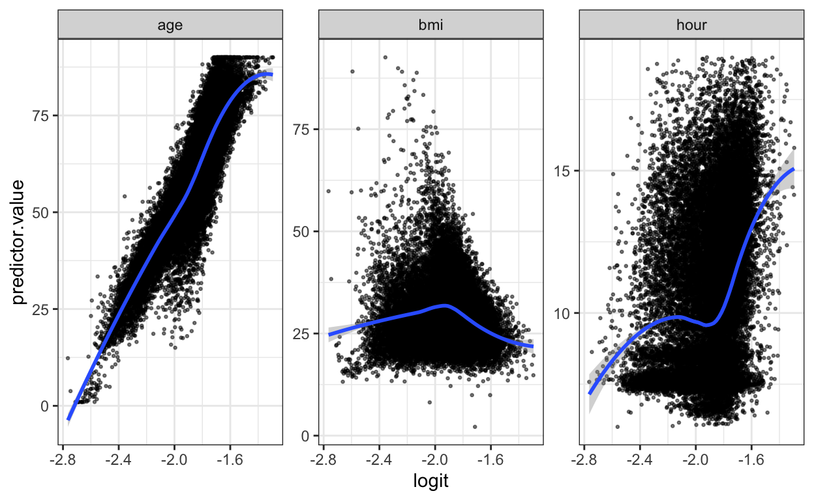
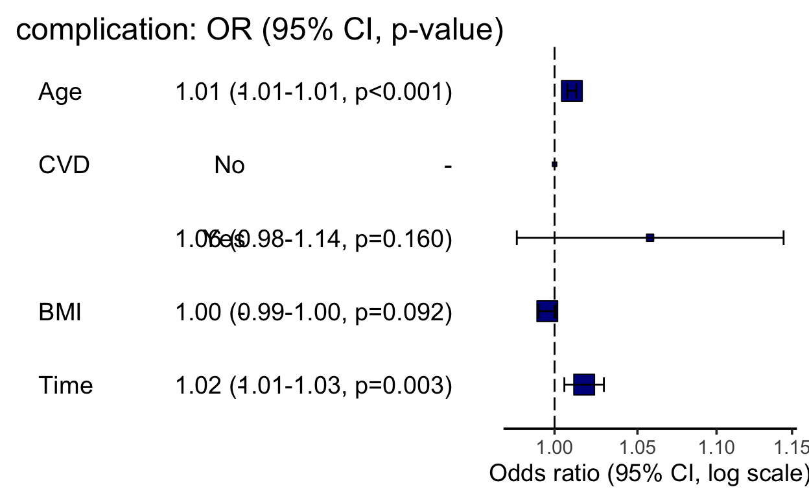
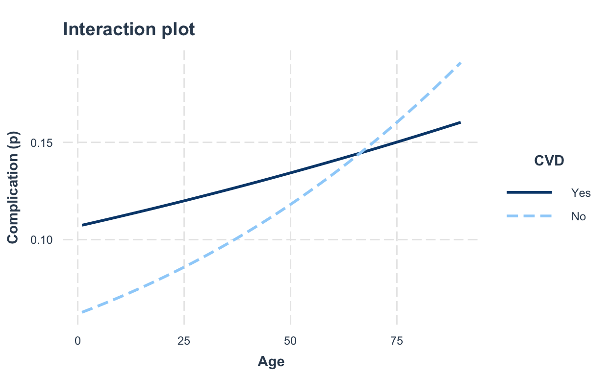

Linear Regression
In this first paragraph I will introduce linear regression, the standard tool that statisticians rely on when analyzing the relationship between interval scale predictors and interval scale outcomes. Stripped to its bare essentials, linear regression models are basically a slightly fancier version of the Pearson correlation.
We are going to analyze data from the positive psychology intervention study (or rather its replication). We will start with the association of depression and happiness total scores at baseline. Later, we will then also include age, income and sex as predictors.
dat <- read_csv ("datasets/positive_psychology/ahi-cesd.csv") # import intervention data
pinfo <- read_csv("datasets/positive_psychology/participant-info.csv") # import participant data
all_dat <- inner_join(x = dat, # the first table you want to join
y = pinfo, # the second table you want to join
by = c("id", "intervention")) # columns the two tables have in common
summarydata <- all_dat %>%
filter(occasion == 0) %>%
select(id, intervention, ahiTotal, cesdTotal, sex, age, educ, income)
After importing, joining and subsetting the data, let´s plot the two key variables of interest: happiness and depression total scores (for the subequent analysis, we will focus on depression as our outcome).
Plotting
ggplot(summarydata, aes(x = ahiTotal , y = cesdTotal)) +
geom_point(colour = "red") +
scale_x_continuous(name = "Happiness Score") +
scale_y_continuous(name = "Depression Score",
limits = c(0,60)) +
geom_smooth(method = "lm") +
theme_minimal()

Table
It is also useful to calculate descriptives statistics for the sample
overall so that you can check that the sample scores are what you were
expecting (e.g., are they comparable to previous studies and samples?).
This is also useful for the write-up. For this purpose, I use the
summarise function again.
descriptives <- summarydata %>%
summarise(mean_happy = mean(ahiTotal, na.rm = TRUE),
sd_happy = sd(ahiTotal, na.rm = TRUE),
mean_depressed = mean(cesdTotal, na.rm = TRUE),
sd_depressed = sd(cesdTotal, na.rm = TRUE))
# Load psych-package and use describe function to create a dataframe with key descriptives per column
library(psych)
descriptives2 <- describe(summarydata)
descriptives2
vars n mean sd median trimmed mad min max
id 1 295 148.00 85.30 148 148.00 109.71 1 295
intervention 2 295 2.50 1.11 2 2.50 1.48 1 4
ahiTotal 3 295 69.71 13.17 69 69.73 14.83 35 106
cesdTotal 4 295 15.06 10.80 12 14.00 10.38 0 53
sex 5 295 1.15 0.36 1 1.06 0.00 1 2
age 6 295 43.76 12.43 44 43.57 13.34 18 83
educ 7 295 3.98 1.12 4 4.16 1.48 1 5
income 8 295 2.04 0.73 2 2.05 1.48 1 3
range skew kurtosis se
id 294 0.00 -1.21 4.97
intervention 3 0.00 -1.35 0.06
ahiTotal 71 -0.01 -0.37 0.77
cesdTotal 53 0.85 0.10 0.63
sex 1 1.96 1.85 0.02
age 65 0.15 -0.52 0.72
educ 4 -1.09 0.48 0.06
income 2 -0.07 -1.15 0.04As you can see, the describe function gives us a very good and easy-to-achieve tabular overview of key descriptives. We will refine this table and plot it as an html-file.
#
descr_table_data <- descriptives2 %>%
select(mean, trimmed, sd, median, min, max, skew, kurtosis)
# Cut first two rows: ID, Intervention type
descr_table_data <- descr_table_data[-c(1:2),]
# Rename rows
row.names(descr_table_data) <- c("Happiness", "Depression", "Sex", "Age", "Education", "Income")
# Load kableExtra package and create striped table
library(kableExtra)
kbl(descr_table_data,
digits = 2,
caption = "Infamous Table 1.",
col.names = c("Mean", "Trimmed", "SD", "Median", "Min", "Max", "Skewness", "Kurtosis")) %>%
kable_styling(bootstrap_options = c("striped", "hover"))
| Mean | Trimmed | SD | Median | Min | Max | Skewness | Kurtosis | |
|---|---|---|---|---|---|---|---|---|
| Happiness | 69.71 | 69.73 | 13.17 | 69 | 35 | 106 | -0.01 | -0.37 |
| Depression | 15.06 | 14.00 | 10.80 | 12 | 0 | 53 | 0.85 | 0.10 |
| Sex | 1.15 | 1.06 | 0.36 | 1 | 1 | 2 | 1.96 | 1.85 |
| Age | 43.76 | 43.57 | 12.43 | 44 | 18 | 83 | 0.15 | -0.52 |
| Education | 3.98 | 4.16 | 1.12 | 4 | 1 | 5 | -1.09 | 0.48 |
| Income | 2.04 | 2.05 | 0.73 | 2 | 1 | 3 | -0.07 | -1.15 |
Estimate model
As we now have a pretty good overview of different relevant descriptives and distribution properties, we can now get to work and estimate the linear regression model.
# Estimate model
linear_model_depr <- lm(cesdTotal ~ ahiTotal, summarydata)
# Check model output
linear_model_depr_summary <- summary(linear_model_depr)
linear_model_depr_summary
Call:
lm(formula = cesdTotal ~ ahiTotal, data = summarydata)
Residuals:
Min 1Q Median 3Q Max
-14.6734 -5.2682 -0.8035 5.3230 29.1891
Coefficients:
Estimate Std. Error t value Pr(>|t|)
(Intercept) 56.52450 2.33846 24.17 <2e-16 ***
ahiTotal -0.59479 0.03297 -18.04 <2e-16 ***
---
Signif. codes: 0 '***' 0.001 '**' 0.01 '*' 0.05 '.' 0.1 ' ' 1
Residual standard error: 7.443 on 293 degrees of freedom
Multiple R-squared: 0.5263, Adjusted R-squared: 0.5247
F-statistic: 325.5 on 1 and 293 DF, p-value: < 2.2e-16Interpretation
Assumptions / power / performance
You can’t check the assumptions until you’ve run the regression so now we’ll do that to check whether there’s anything to be concerned about. As we covered in the lecture, the assumptions for regression are:
The outcome/DV is a interval/ratio level data
All values of the outcome variable are independent (i.e., each score should come from a different participant)
The predictors have non-zero variance
The relationship between outcome and predictor is linear
The residuals should be normally distributed
There should be homoscedasticity (homogeneity of variance, but for the residuals)
Assumptions 1-3 are nice and easy. We know this from the data we have and the design of the study. Assumption 4 simply means that there is some spread in the data - for example, there’s no point running a regression with age as a variable if all your participants are 20 years old.
For the rest of the assumptions, we’re going to use functions from
the packages see and performance that make
life a whole lot easier.
library(performance)
library(see)
# Test model assumptions
check_model(linear_model_depr)
## Test normality of residuals
check_normality(linear_model_depr)
Warning: Non-normality of residuals detected (p < .001).## Test homoscedasticity (we need to use the heteroscedasticity function)
check_heteroscedasticity(linear_model_depr)
Warning: Heteroscedasticity (non-constant error variance) detected (p = 0.001).After testing (and not meeting) these assumptions, we should also
have a look at the model performance (the model_performance
function can be used for different models to provide different
indicators) and calculate the minimum effect size we were able to detect
given the sample size and design of the study using
pwr.f2.test(). I´ll showcase a different approach with a
different set of functions after estimating a logistic regression model
in the next paragraph - please feel free to try out which of these
functions suit your workflow best.
# Test model performance
model_performance(linear_model_depr)
# Indices of model performance
AIC | BIC | R2 | R2 (adj.) | RMSE | Sigma
-------------------------------------------------------
2025.450 | 2036.511 | 0.526 | 0.525 | 7.418 | 7.443# Power and effect size
library(pwr)
pwr.f2.test(u = 1, v = 293, f2 = NULL, sig.level = .05, power = .8)
Multiple regression power calculation
u = 1
v = 293
f2 = 0.02677854
sig.level = 0.05
power = 0.8So what arguments do you specify for the pwr.f2.test()
function?
u- Numerator degrees of freedom. This the number of coefficients you have in your model (minus the intercept)v- Denominator degrees of freedom. This is calculated as v=n-u-1, where n is the number of participantsf2- The effect size - here we are solving the effect size, so this parameter is left as NULLsig.level- The significance level of your study power - The power level of your study
But now we are still missing the observed \(f^{2}\). As (at least to my knowledge) no function exists to calculate the observed \(f^{2}\), we the following formula and objects from the model summary.
# Calculate the observed f2
f2_observed <- linear_model_depr_summary$adj.r.squared/(1 - linear_model_depr_summary$adj.r.squared)
f2_observed
[1] 1.103802Reproducible reporting
If you would then like to report your findings, you might as well use RMarkdown to create a reproducible results section, e.g.:
“A simple linear regression model was estimated with the CESD total score (M = 15.06, SD = 10.8) as the outcome variable and the AHI total score (M = 69.71, SD = 13.17) as the predictor variable. The results of the regression indicated that the model significantly predicted depressive symptoms (F(1, 293) = 325.52, p < .001, Adjusted R2 = 0.52, \(f^{2}\) = 1.1), accounting for 52% of the variance. Happiness was a significant predictor (β = -0.59, p < .001. )”
Table
There are several nice packages to produce results tables as
html. I like to work with the sjPlot package
as it offers a range of arguments to further customize and refine the
table to your needs.
library(sjPlot)
# Create table
tab_model(linear_model_depr,
pred.labels = c("Intercept","AHI Score"),
dv.labels = "CESD Score")
| CESD Score | |||
|---|---|---|---|
| Predictors | Estimates | CI | p |
| Intercept | 56.52 | 51.92 – 61.13 | <0.001 |
| AHI Score | -0.59 | -0.66 – -0.53 | <0.001 |
| Observations | 295 | ||
| R2 / R2 adjusted | 0.526 / 0.525 | ||
Multiple linear regression
For our first and more elaborate example, we only used one predictor variable. In most cases, however, we are interested in the association of more than one predictor with the outcome. Luckily, you can just add them to the formula we used above and continue from there.
# Estimate model
linear_model_depr_multi <- lm(cesdTotal ~ ahiTotal + income + sex + educ, summarydata)
# Check model output
linear_model_depr_multi_summary <- summary(linear_model_depr_multi)
linear_model_depr_multi_summary
Call:
lm(formula = cesdTotal ~ ahiTotal + income + sex + educ, data = summarydata)
Residuals:
Min 1Q Median 3Q Max
-14.6549 -5.5549 -0.6427 5.1816 29.1593
Coefficients:
Estimate Std. Error t value Pr(>|t|)
(Intercept) 55.8097 3.0907 18.057 <2e-16 ***
ahiTotal -0.5923 0.0334 -17.733 <2e-16 ***
income -0.2746 0.6107 -0.450 0.653
sex 1.4604 1.2192 1.198 0.232
educ -0.1442 0.4020 -0.359 0.720
---
Signif. codes: 0 '***' 0.001 '**' 0.01 '*' 0.05 '.' 0.1 ' ' 1
Residual standard error: 7.457 on 290 degrees of freedom
Multiple R-squared: 0.5293, Adjusted R-squared: 0.5228
F-statistic: 81.54 on 4 and 290 DF, p-value: < 2.2e-16Although most of the aspects covered above also apply for linear
regression models with multiple predictors, you might consider plotting
your results by using the plot_model function.
# Plot model results
plot_model(linear_model_depr_multi,
title = "Estimate Plot: CESD Score",
axis.labels = c("Education", "Sex", "Income", "AHI Score")) +
theme_minimal()

Additionally, you will have to pay some attention to potential issues
of multi-collinearity (can be tested within the check_model
function).
Logistic Regression
Logistic regression is an extension / a special case of the (generalized) linear model, where the variable being predicted is categorical. We will focus on binary logistic regression, where the dependent variable has two levels, e.g., yes or no, 0 or 1, dead or alive. Other types of logistic regression include ‘ordinal’, when the outcome variable has >2 ordered levels, and ‘multinomial’, where the outcome variable has >2 levels with no inherent order.
We will only deal with binary logistic regression. When we use the term ‘logistic regression’, that is what we are referring to.
We have good reason. In healthcare we are often interested in an event (like death) occurring or not occurring. Binary logistic regression can tell us the probability of this outcome occurring in a patient with a particular set of characteristics.
Although in binary logistic regression the outcome must have two levels, remember that the predictors can be either continuous or categorical.
library(readxl)
# Import data
surgery_dat <- read_excel ("datasets/surgery_timing/surgerytiming.xlsx") # import surgery data
# Define complication column as factor
surgery_dat$complication <- factor(surgery_dat$complication, levels=c("0","1"), labels=c("No","Yes"))
# Filter for complete cases (at least for model relevant columns)
surgery_dat <- surgery_dat %>%
select(complication,
age,
baseline_cvd,
bmi,
hour) %>%
drop_na()
For our logistic regression model, we will use the surgery timing data and look at different predictors of complications during surgery.
# Estimate model
log_model_complication <- glm(formula = complication ~ age*baseline_cvd + bmi + hour, family = "binomial", data = surgery_dat)
# Summary of results
log_model_complication_summary <- summary(log_model_complication)
log_model_complication_summary
Call:
glm(formula = complication ~ age * baseline_cvd + bmi + hour,
family = "binomial", data = surgery_dat)
Deviance Residuals:
Min 1Q Median 3Q Max
-0.6961 -0.5584 -0.5299 -0.4765 2.3095
Coefficients:
Estimate Std. Error z value Pr(>|z|)
(Intercept) -2.732283 0.136409 -20.030 < 2e-16 ***
age 0.014176 0.001801 7.872 3.49e-15 ***
baseline_cvd 0.596736 0.166512 3.584 0.000339 ***
bmi -0.005650 0.002578 -2.192 0.028387 *
hour 0.017291 0.005933 2.914 0.003566 **
age:baseline_cvd -0.008990 0.002693 -3.338 0.000844 ***
---
Signif. codes: 0 '***' 0.001 '**' 0.01 '*' 0.05 '.' 0.1 ' ' 1
(Dispersion parameter for binomial family taken to be 1)
Null deviance: 22461 on 28708 degrees of freedom
Residual deviance: 22350 on 28703 degrees of freedom
AIC: 22362
Number of Fisher Scoring iterations: 4As you might have noticed, several minor things have changed:
glmfunction is used to estimate generalized linear models (while lm function is reserved for linear regression models specifically)familyargument describes the error distribution and link function to be used in the model (family types are binomial, gaussian, Gamma, poisson, quasi, quasibinomial, quasipoisson)*indicates an interaction term to be included in the model. While the*will return both predictors AND an interaction thereof to be included, so could also specify the interaction term directly with a:
So things have changed but also got much more interesting. Let´s try to unravel some of the results we find (but only after testing our assumptions).
# Test model assumptions
check_model(log_model_complication)
## Test heteroscedasticity
check_heteroscedasticity(log_model_complication)
NULL## Test collinearity
check_collinearity(log_model_complication)
# Check for Multicollinearity
Low Correlation
Term VIF Increased SE Tolerance
age 2.21 1.49 0.45
bmi 1.09 1.04 0.92
hour 1.00 1.00 1.00
High Correlation
Term VIF Increased SE Tolerance
baseline_cvd 22.64 4.76 0.04
age:baseline_cvd 26.82 5.18 0.04# Linearity assumption
## Predict the probability (p) of complications arrising
probabilities <- predict(log_model_complication, type = "response")
## Select only numeric predictors
lin_preds <- surgery_dat %>%
select(age,
bmi,
hour)
predictors_names <- colnames(lin_preds)
## Bind the logit and tidy the data for plot
lin_preds <- lin_preds %>%
mutate(logit = log(probabilities/(1-probabilities))) %>%
gather(key = "predictors", value = "predictor.value", -logit)
## Plot continuous predictors and the logit of the outcome
ggplot(lin_preds, aes(logit, predictor.value))+
geom_point(size = 0.5, alpha = 0.5) +
geom_smooth(method = "loess") +
theme_bw() +
facet_wrap(~predictors, scales = "free_y")

As there could be some issues related to the very strong collinearity
(VIFs), we have to re-check with a model without the respective
interaction term (as the performance package already
suggests):
# Alternative model without interaction term
log_model_complication_ni <- glm(formula = complication ~ age + bmi + hour, family = "binomial", data = surgery_dat)
summary(log_model_complication_ni)
Call:
glm(formula = complication ~ age + bmi + hour, family = "binomial",
data = surgery_dat)
Deviance Residuals:
Min 1Q Median 3Q Max
-0.6712 -0.5547 -0.5224 -0.4840 2.2681
Coefficients:
Estimate Std. Error z value Pr(>|z|)
(Intercept) -2.606065 0.121089 -21.522 < 2e-16 ***
age 0.011033 0.001194 9.242 < 2e-16 ***
bmi -0.003426 0.002465 -1.390 0.16450
hour 0.017424 0.005933 2.937 0.00332 **
---
Signif. codes: 0 '***' 0.001 '**' 0.01 '*' 0.05 '.' 0.1 ' ' 1
(Dispersion parameter for binomial family taken to be 1)
Null deviance: 22461 on 28708 degrees of freedom
Residual deviance: 22363 on 28705 degrees of freedom
AIC: 22371
Number of Fisher Scoring iterations: 4## Test model assumptions
check_model(log_model_complication_ni)
## Test collinearity
check_collinearity(log_model_complication_ni)
# Check for Multicollinearity
Low Correlation
Term VIF Increased SE Tolerance
age 1.00 1.00 1.00
bmi 1.00 1.00 1.00
hour 1.00 1.00 1.00So this looks good and we might tend to still include the interaction term (due to a potential inflation of VIFs). However, as the coefficients change very much, I would suggest to still report both sets of analysis.
Effect size
(Intercept) age baseline_cvd bmi
0.06507058 1.01427694 1.81618080 0.99436583
hour age:baseline_cvd
1.01744128 0.99105051 Plotting
Instead of the coefficient plot above, we will here showcase a new
package and function: or_plot from the
finalfit package. Very nice!
# Calculate odds ratios (ORs)
# load package
library(finalfit)
# Refine binary predictor
str(surgery_dat$baseline_cvd)
num [1:28709] 1 1 0 1 0 1 1 1 1 0 ...# Replace
surgery_dat$baseline_cvd <- factor(surgery_dat$baseline_cvd, levels=c("0","1"), labels=c("No","Yes"))
# Define DV and IV
dependent = "complication"
explanatory = c("Age", "CVD", "BMI", "Time")
# Create plot
surgery_dat %>%
rename("Age" = "age",
"CVD" = "baseline_cvd",
"BMI" = "bmi",
"Time" = "hour") %>%
or_plot(dependent, explanatory) +
labs(title = "Odds of complication occuring")
Error in surgery_dat %>% rename(Age = "age", CVD = "baseline_cvd", BMI = "bmi", : non-numeric argument to binary operator
Table
After using a ready made function to create the results table for our
linear regression model, we will now focus on higher customizability
with a tidy approach using broom, papaja and
kableExtra.
library(broom)
# Create model results dataframe
log_table <- log_model_complication %>%
tidy()
# Add column with ORs
log_table <- cbind(log_table, odds_ratios)
# Rename rows
row.names(log_table) <- c("Intercept","Age","CVD","BMI","Time","Age x CVD")
# Label p values in line with APA standards
library(papaja)
log_table$p.value <- printp(as.numeric(log_table$p.value))
# Create table (select columns first, then refine table options)
log_table %>%
select(estimate,
std.error,
odds_ratios,
p.value) %>%
kbl(digits = 2,
col.names = c("Estimate","SE","OR","p"),
caption = "Model Table ...") %>%
kable_styling(bootstrap_options = c("striped", "hover"))
| Estimate | SE | OR | p | |
|---|---|---|---|---|
| Intercept | -2.73 | 0.14 | 0.07 | < .001 |
| Age | 0.01 | 0.00 | 1.01 | < .001 |
| CVD | 0.60 | 0.17 | 1.82 | < .001 |
| BMI | -0.01 | 0.00 | 0.99 | .028 |
| Time | 0.02 | 0.01 | 1.02 | .004 |
| Age x CVD | -0.01 | 0.00 | 0.99 | .001 |
Interaction
As we cannot interpret the interaction term without plotting it, we will now use the interactions package that offers a wider range of options and very nice basic functionality.
library(interactions)
# Create plot
interact_plot(log_model_complication,
pred = age,
modx = baseline_cvd,
x.label = "Age",
y.label = "Complication (p)",
legend.main = "CVD",
modx.labels = c("No","Yes"),
main.title = "Interaction plot")
